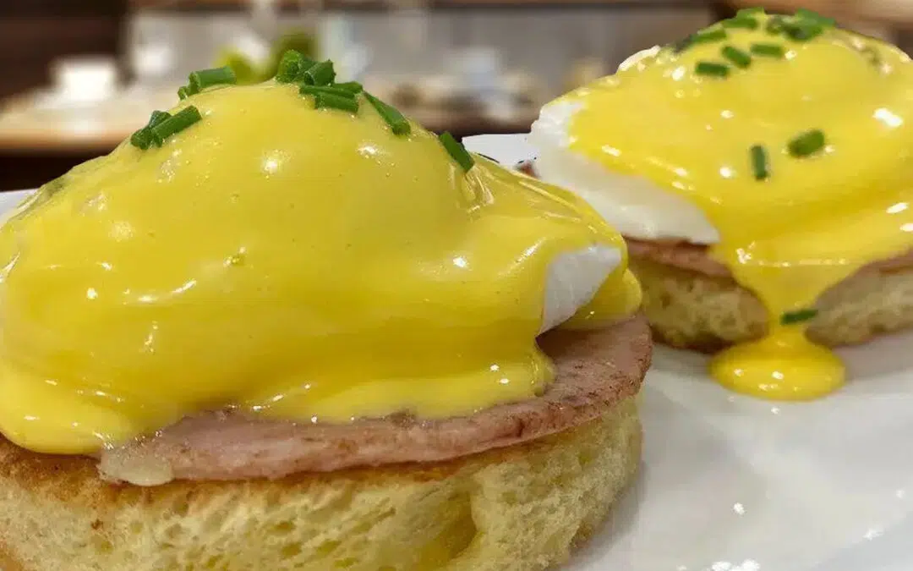

Eggs Benedict

Home
Eggs Benedict and a 3 minute Hollandaise Sauce!
Hello friends, today we're making Eggs Benedict with a Hollandaise Sauce! A breakfast that is super easy to make and will impress your "better half".
Only takes 5 minutes to cook! So easy to make.
So go ahead and give this Eggs Benedict and Hollandaise Sauce Recipe a try. You will be glad you did, I promise!
Ingredients
For The Benedicts:
- 2 Eggs per serving
- 2 slices of Canadian Bacon or your favorite Ham
For the Hollandaise Sauce:
- 3 Egg Yolks
- 1 teaspoon Lemon Juice
-
- 1 teaspoon White Wine or Water
- 4.5 ounces Butter melted
- Salt and Pepper to taste
- A dash of Hot Sauce if you like
Recipe Instructions
For the Eggs:
- Strain the eggs into a small glass bowl to strain the excess water in the egg whites.
- Bring your water to a soft boil (not a rolling boil) and create a vortex with a spoon. Slowly and carefully drop your egg in the center of the vortex. If you have more than 1 egg to prepare you certainly can put more than one in the water but you will not be able to create the vortex so be careful not to put then to close to each other and you may need to use your spoon to make sure that the egg white of each egg in on top of your yolk.
- You can reserve each egg in ice water. And when ready to serve plunge them in the boiling water another 30 seconds.
For the Hollandise Sauce:
- Carefully melt the butter to 200ºF/93ºC. In your blender process, yolks, lemon juice and water and blend for a few seconds. Slowly add the melted butter until your sauce is nice a thick. Adjust seasoning with salt and pepper and maybe add your favorite hot sauce.
- If making in advance keep in a warm place
To Serve
- 1 English muffin per person or two Brioche Toast cut into rounds
- 2 slices of Canadian Bacon or your favorite Ham cut into rounds
- 1 teaspoon chopped chives (for decoration)
- Prepare each plate with first the bread topped with the ham one egg and carefully coat each egg with the hollandaise. Decorate with Chives.